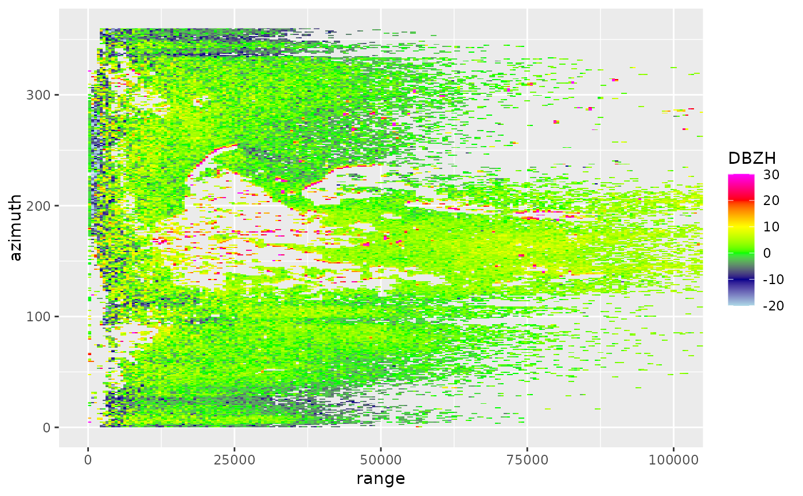
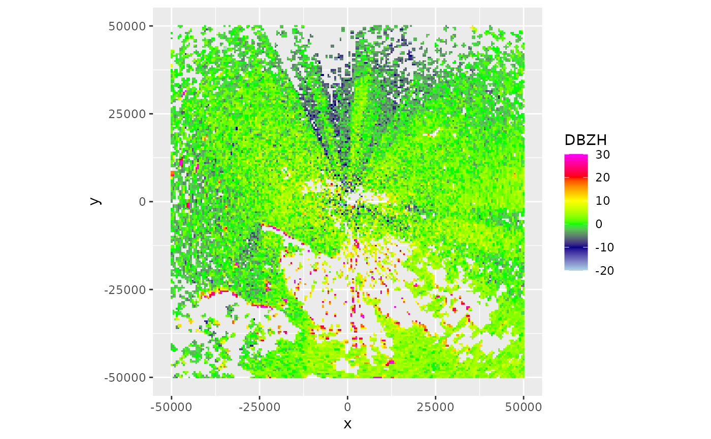
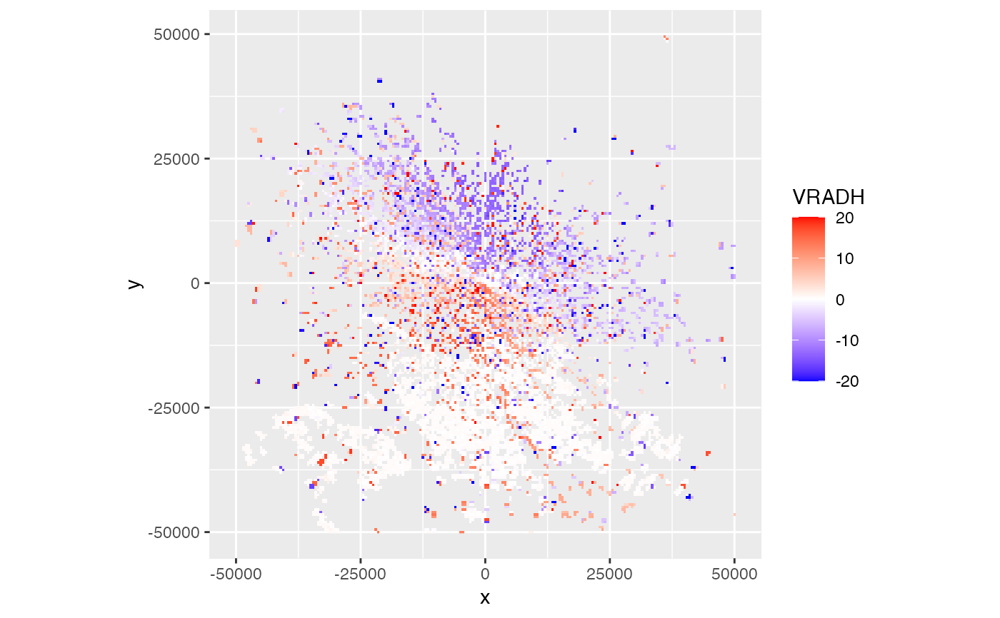

Project a scan (scan) or parameter (param) to a plan position indicator (ppi)
Source: R/project_as_ppi.R
project_as_ppi.RdMake a plan position indicator (ppi)
Usage
project_as_ppi(
x,
grid_size = 500,
range_max = 50000,
project = TRUE,
ylim = NULL,
xlim = NULL,
raster = NA,
k = 4/3,
re = 6378,
rp = 6357
)
# S3 method for class 'param'
project_as_ppi(
x,
grid_size = 500,
range_max = 50000,
project = TRUE,
ylim = NULL,
xlim = NULL,
raster = NA,
k = 4/3,
re = 6378,
rp = 6357
)
# S3 method for class 'scan'
project_as_ppi(
x,
grid_size = 500,
range_max = 50000,
project = TRUE,
ylim = NULL,
xlim = NULL,
raster = NA,
k = 4/3,
re = 6378,
rp = 6357
)Arguments
- x
An object of class
paramorscan.- grid_size
Cartesian grid size in m.
- range_max
Maximum range in m.
- project
Whether to vertically project onto earth's surface.
- ylim
The range of latitudes to include.
- xlim
The range of longitudes to include.
- raster
(optional) RasterLayer with a CRS. When specified this raster topology is used for the output, and
grid_size,range_max,xlim,ylimare ignored.- k
Numeric. Standard refraction coefficient.
- re
Numeric. Earth equatorial radius, in km.
- rp
Numeric. Earth polar radius, in km.
Value
An object of class 'ppi'.
Methods (by class)
project_as_ppi(param): Project asppifor a single scan parameter.project_as_ppi(scan): Project multipleppi's for all scan parameters in a scan
Examples
# load a polar scan example object:
data(example_scan)
example_scan
#> Polar scan (class scan)
#>
#> parameters: DBZH VRADH RHOHV ZDR PHIDP
#> elevation angle: 0.5 deg
#> dims: 480 bins x 360 rays
# plot the scan:
plot(example_scan)

# make PPIs for all scan parameters in the scan:
ppi <- project_as_ppi(example_scan)
# print summary info for the ppi:
ppi
#> Plan position indicator (class ppi)
#>
#> parameters: DBZH VRADH RHOHV ZDR PHIDP
#> dims: 201 x 201 pixels
#>
# plot the ppi:
plot(ppi)

# extract the DBZH scan parameter of the volume to a new
# object 'param':
param <- get_param(example_scan, "VRADH")
# make a ppi for the new 'param' object:
ppi <- project_as_ppi(param)
# print summary info for this ppi:
ppi
#> Plan position indicator (class ppi)
#>
#> parameters: VRADH
#> dims: 201 x 201 pixels
#>
# plot the ppi:
plot(ppi)
